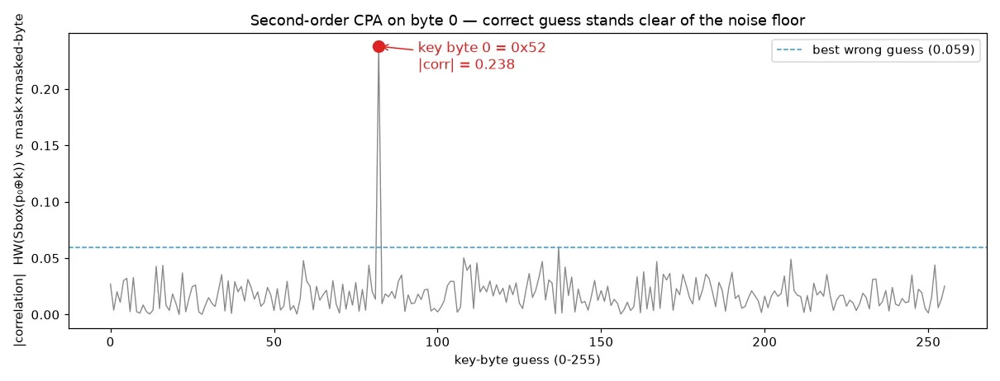

01Start point: emanation.zip.
- What I found: plaintexts.npy (8000 x 16 bytes), traces.npy (8000 x 56 float samples), sealed_order.hex (43 bytes), and a README describing the leakage model and the two countermeasures.
- Note: the downloaded zip's SHA-256 (0937...b6a4, 1,793,415 bytes) did not match the value in the brief (f1d1...c03f, 1,793,377 bytes). The contents were plain numpy arrays and text, so I loaded them with allow_pickle=False (a .npy file can carry pickled objects, which can execute code on load).
02Pivot: defeating the random delay.
- What I found: every trace has exactly one large spike (~25, far above every other sample) at a position between 0 and 16 that changes per trace.
- Thinking: that spike is a fixed event in the computation, so its position *is* the random delay. Shifting each trace so the spike sits at index 0 re-aligns all 8000 traces. After alignment, offsets 3, 5, ..., 35 hold 17 samples with mean 4 and std ~1.73 - exactly the Hamming weight of a random byte (mean 4, variance 2) plus unit-variance noise. The even offsets are pure noise.
03Pivot: defeating the mask (second-order CPA).
- Why first-order CPA fails: each state byte leaks as HW(Sbox(p ^ k) ^ m) with a fresh random m, so a single sample is statistically independent of the key. Correlating raw samples with any key guess gives nothing.
- The fix: the mask itself also leaks in one sample, HW(m). Multiplying the centered mask sample by the centered masked-byte sample combines both shares; that product *does* depend on HW(Sbox(p ^ k)) (negatively, for a Hamming-weight model). This is the classic second-order "centered product" attack.
- Finding the mask slot: for each slot, I tried it as the mask against every other slot and every key byte. Slot 0 scored 3.79 versus ~0.87 for all others, so slot 0 = HW(m) and slots 1..16 = the 16 masked bytes.
- Result: for each byte, the right key guess correlates at ~0.24 while the best wrong guess stays below 0.08, and the slots turned out to be in byte order. Key: 52cc11fc4a2ecfc066e3349f4af9fdea

04Pivot: reading the order.
- What I did: AES-128-CTR decryption of sealed_order.hex with the recovered key and a zero counter block.
- Result: CSCTF{relay_order_55a10bd8f06393bcc1ae8065}. Readable plaintext in the expected flag format confirms all 16 key bytes at once (one wrong byte would garble that block of output). _(No reproduction capture: the challenge input files are not in this repo.)_